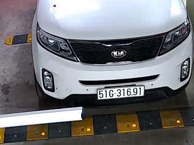
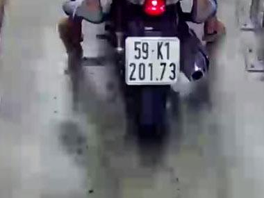
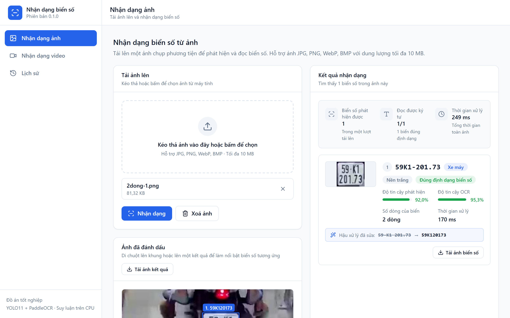

Cùng một hệ thống ALPR. Cùng một phép đo. Ở Việt Nam, xe máy chiếm 85–90% lưu lượng đường bộ — hệ thống nhập khẩu hỏng đúng chỗ Việt Nam cần nhất.


| Tập TEST v3 | P | R | mAP50 | mAP50-95 |
|---|---|---|---|---|
| Biển 1 dòng (286) | 0,986 | 0,990 | 0,988 | 0,753 |
| Biển 2 dòng (1.325) | 0,973 | 0,969 | 0,968 | 0,765 |
| TẤT CẢ (1.611) | 0,984 | 0,971 | 0,983 | 0,783 |
| Ngưỡng chỉ tiêu | ≥0,92 | ≥0,90 | ≥0,90 | ≥0,65 |
